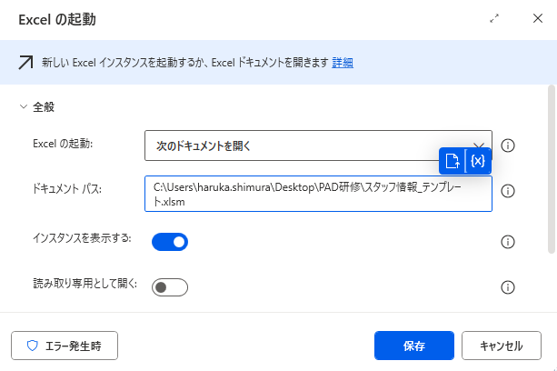
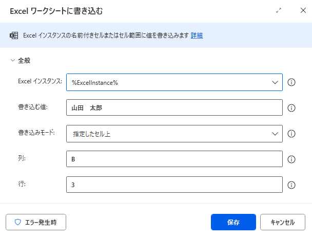
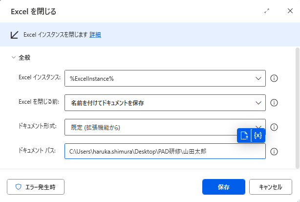
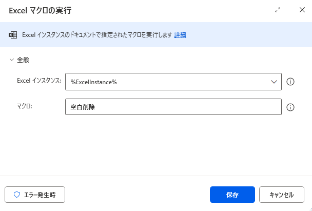
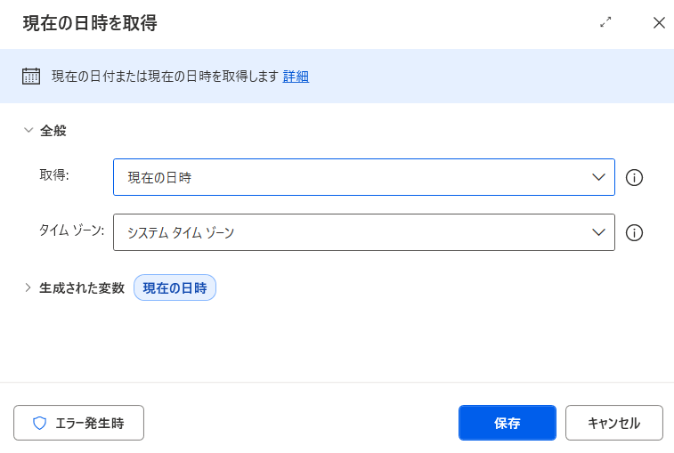
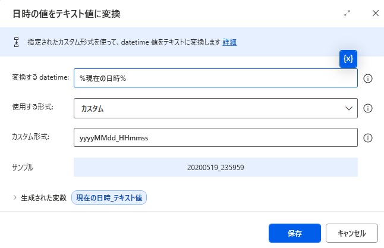
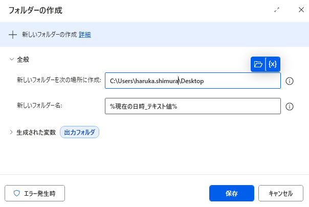

第3回 Excel自動化 〜テンプレ運用 / マクロ / 日時 / ファイル操作〜
日々の Excel 手作業を自動化できるようになる回です。
最終演習の「出力先フォルダの動的生成 → Excel への書き込み → マクロ呼び出し → 別名保存」までを、この回でひとまとめに習得します。
事前準備
- 第2回 変数を完全理解 が完了している
- テンプレートファイル
スタッフ情報_テンプレート.xlsmが手元にある（下のボタンからダウンロードできます） - Excel が起動できる状態
A. Excel 自動化の基本3アクション
Excel の自動化は、以下の3つのアクションを順番に並べるだけで成立します。最終演習でも、この3アクションが土台になります。

① Excel の起動
テンプレ Excel（スタッフ情報_テンプレート.xlsm）を開きます。「ドキュメントパス」に開きたいファイルのフルパスを指定するだけで、Excel が立ち上がります。
生成された ExcelInstance 変数を、以降のアクションで使い回します。

② Excel ワークシートに書き込む
指定したセルに値を書き込みます。本研修では書き込み先をセル B3 に統一します。
セル指定は「列 B＋行 3」のように分けて入力します。書き込む値は固定文字列でも変数でも OK。

③ Excel を閉じる（保存して閉じる）
編集した Excel を保存して閉じます。「Excel を閉じる前」で「名前を付けてドキュメントを保存」を選び、保存先パスを指定すれば別名保存で完結します。
マクロ有効ブックとして保存するため、拡張子は .xlsm を指定してください。
スタッフ情報_テンプレート.xlsm）を開き、B3 セルに「山田 太郎」と書き込んで別名保存するフローを作ってみましょう。
B. マクロを呼び出す（Excel マクロの実行）
テンプレ Excel に組み込まれているマクロを PAD から呼び出せます。配布しているテンプレ スタッフ情報_テンプレート.xlsm には、あらかじめ「空白削除」というマクロを登録済みです。最終演習ではこのマクロを呼び出して、プロフィールシートの不要な空白行を一括除去します。

Excel マクロの実行
「Excel インスタンス」に %ExcelInstance% を指定し、「マクロ」欄にマクロ名 空白削除 を入力するだけで実行されます。
※ 「Excel を閉じる」アクションの直前に差し込んでください（閉じた後では実行できません）。
C. 日時整形（現在の日時 ＋ 日時をテキストに変換）
「日時フォルダを作る」「ファイル名に日時を入れる」ためには、現在日時を取得して文字列に整形する必要があります。下記の 2 つのアクションをこの順番で並べると完成します。
① 現在の日時を取得 アクションが生成する変数を、② 日時をテキストに変換 の「変換するテキスト」欄に指定します。必ず 2 アクションがセットで必要です。

① 現在の日時を取得
「取得」＝現在の日時、「タイムゾーン」＝システム タイム ゾーン のままで OK。
このアクションが実行されると、現在時刻が DateTime 型の変数として生成されます。
生成変数名はデフォルトで CurrentDateTime ですが、ここでは分かりやすく 現在の日時 にリネームしておきます。

② 日時をテキストに変換
「変換するテキスト」欄には、① で作った変数 %現在の日時% を指定します（%CurrentDateTime% をそのまま打ち込むのではなく、変数選択ボタンから ① の生成変数を選ぶこと）。
「使用する形式」を「カスタム」に切り替え、カスタム形式欄に yyyyMMdd_HHmmss を入力。
結果：20260518_143025 のような秒単位までユニークな文字列が、生成変数 現在の日時_テキスト値 に格納され、フォルダ名やファイル名にそのまま使えます。
%CurrentDateTime% という文字列をそのまま打ち込んでしまうと、変数として認識されずエラーになります。必ず {x} アイコン（変数の選択）から ① の生成変数をクリックして挿入してください。
D. フォルダの作成
実行ごとに「日時名のフォルダ」を作成すれば、同じフローを何度回しても出力先がかぶりません。最終演習でも、指定フォルダ内に yyyyMMdd_HHmmss の名前のフォルダを作って、その中に個別 Excel を吐き出します。

フォルダーの作成
「フォルダーのパス」に作成先（任意の指定フォルダ）を指定し、「新しいフォルダー名」に %現在の日時_テキスト値% を指定するだけで、実行ごとに日時名フォルダが自動生成されます。
生成された 出力フォルダ を、以降のファイル保存先パスとして使い回します。
yyyyMMdd_HHmmss） → フォルダーの作成（新しいフォルダー名＝%現在の日時_テキスト値%、生成変数名＝出力フォルダ）」を追加し、さらに「Excel を閉じる」アクションの保存先パスを下記の文字列に書き換えてみましょう（👇 ボタンを押すとそのままコピーできます）。
%出力フォルダ%\山田太郎.xlsm実行するたびに、指定フォルダ内に日時名のフォルダが新しく作られ、その中に Excel が保存されれば成功です。
解答例 / 完成フローテキスト
本回のハンズオン課題の完成フローテキストをダウンロードして、PAD 編集画面に貼り付けてください。
⬇️ lesson-3.txt をダウンロードよくある詰まりと FAQ
.xlsm であること、マクロ名が完全一致していること、Excel の「マクロを有効にする」が許可されていることを確認してください。MM、分は mm（小文字）です。秒は ss。yyyyMMdd_HHmmss が標準形。%現在の日時_テキスト値%（秒単位まで含む）を使えば、実行ごとに必ず別名になるので自然に解決します。